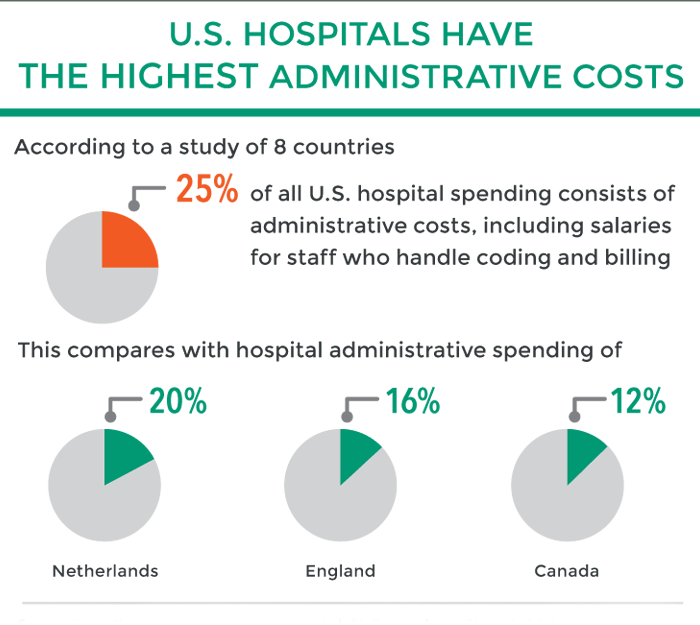

Unlike nations with national insurance plans, the United States spends billions of dollars to fragment our population into thousands of insurance pools and then to fragment those pools into tens of thousands of subsets with differing benefits. This format generates substantial administrative challenges. For example, physician offices in Chicago might deal with 17,000 different payment schedules.
With respect to healthcare, this chart gives us an indication of why these efforts are backfiring: The more an industry becomes like a regulated utility, the more administrators are required to enforce the regulations and administer the programs. And they, as well as the programs they administer, are expensive. All manner of distortions follow, and the costs of healthcare go up proportionally.
There were 1,300 billing clerks at Duke University Hospital, which has only 900 beds. Those billing specialists are needed to determine how to bill to meet the varying requirements of multiple insurers.
You see, when you have that much administration, what you really have is a bunch of meetings. Lots of folks carrying their coffee from place to place. They are meeting about more policies, more protocols to satisfy government-created nonsense.
It costs more money to exclude patients and restrict benefits that it would to provide comprehensive care to all patients without fragmentation. Two authors of the September article previously estimated that replacing our multipayer system with a national health program would recover $320 billion in administrative costs.This exceeds the estimated $220 billion in additional costs needed to provide comprehensive care to everyone.